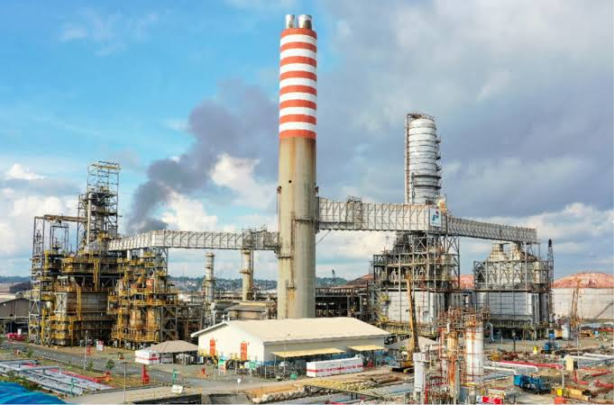

Pembangunan
Konvensional
Pembangunan konvensional adalah pembangunan yang lebih berfokus pada pertumbuhan ekonomi dan keuntungan dalam jangka pendek tanpa terlalu memperhatikan dampaknya terhadap lingkungan dan kehidupan sosial. Pembangunan ini cenderung memanfaatkan sumber daya alam secara besar-besaran sehingga dapat menyebabkan kerusakan lingkungan dan berkurangnya sumber daya alam.
Contoh Pembangunan Konvensional
Pertambangan secara besar-besaran

Mengambil sumber daya alam untuk memenuhi kebutuhan industri dan ekonomi tanpa pengelolaan lingkungan yang memadai.
Pembangunan infrastruktur

Membangun jalan raya dan kawasan industri untuk mempercepat kegiatan ekonomi, tetapi dapat mengurangi ruang hijau.
Pembangunan pabrik industri

Meningkatkan produksi dan ekonomi, tetapi dapat menghasilkan polusi udara dan limbah.
Penebangan hutan secara berlebihan

Membuka lahan untuk industri atau pembangunan tanpa memperhatikan kelestarian hutan.
Dampak Positif
Meningkatkan pertumbuhan ekonomi.
Membuka lapangan pekerjaan.
Meningkatkan pembangunan infrastruktur.
Meningkatkan hasil produksi dan pendapatan negara.
Dampak Negatif
Menyebabkan pencemaran udara, air, dan tanah.
Mengurangi sumber daya alam.
Menyebabkan kerusakan hutan dan habitat hewan.
Meningkatkan kesenjangan sosial dan ekonomi.
Berpotensi menyebabkan pemanasan global.